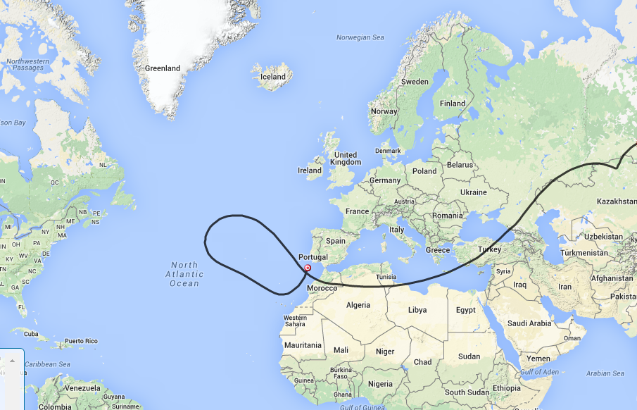
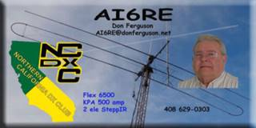

The CNSP-21 balloon flying at 38k’. It’s radio call is K6RPT-12 and it is intended to be a long duration flight. The balloon was launched Sunday (1/24/2015) afternoon from the South San Jose area. It is using a Super Cap in place of the battery so it is limited to daylight radio traffic. It does have 4 solar panels and is currently flying at about 38,000’ altitude. The link below will take you to the APRS screen to check on the balloon progress. http://aprs.fi/#!mt=roadmap&z=13&call=a%2FK6RPT-12&timerange=604800&tail=604800 My first flight prediction turned out to be pretty close so I have done an update based on its current position off the coast of Portugal. The balloon will again get out of radio range so don’t be mislead by a lack of communications later today.  Don  |